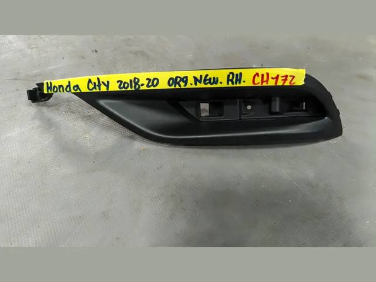

Piezas de carrocería para Honda City
11 piezas disponibles hoy para Honda City, cada una con su foto y su código: defensas delanteras (2), covers de halógena (2), refuerzos delanteros (2), lámparas traseras (1). Dinos el año de tu carro y te confirmamos si le sirve.
- Garantía de 3 días
- Foto real de cada pieza
- Efectivo, Yappy o ACH
- Lunes a sábado, 8:00 a. m. a 5:00 p. m.
Defensas delanteras para Honda City 2
 899City
899CityCovers de halógena para Honda City 2
 CH108City2018-20 · lado izquierdo · original nuevo
CH108City2018-20 · lado izquierdo · original nuevo
CH172City2018-20 · lado derecho · original nuevo R027City / Fit
R027City / Fit R028City / Fit
R028City / Fit 338City
338City DT154City
DT154City GF102City
GF102City